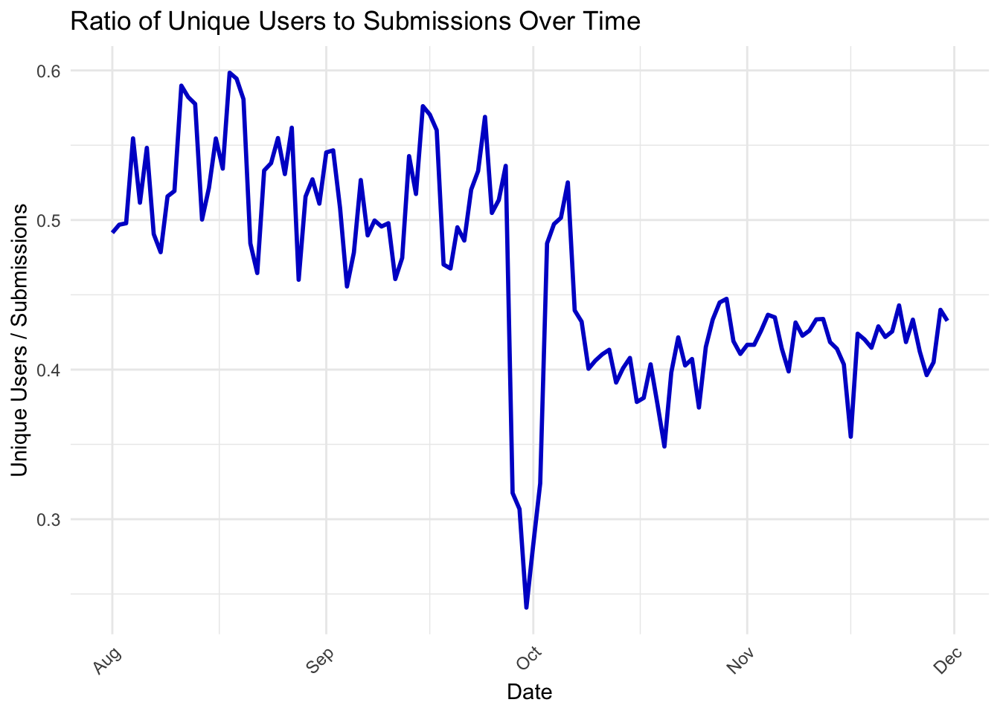
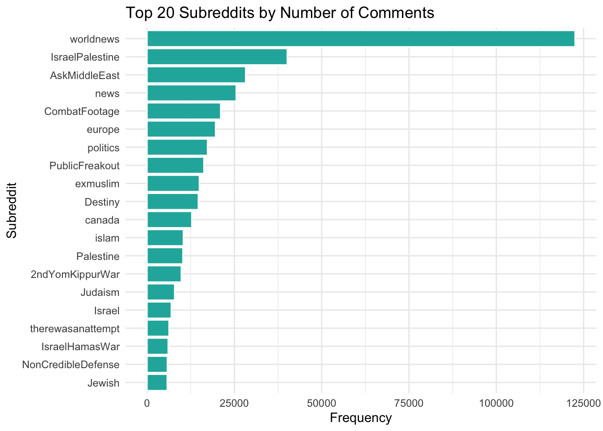
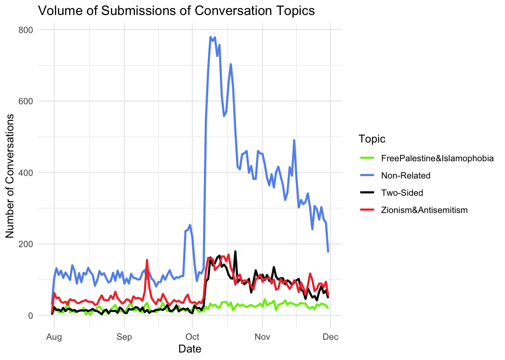
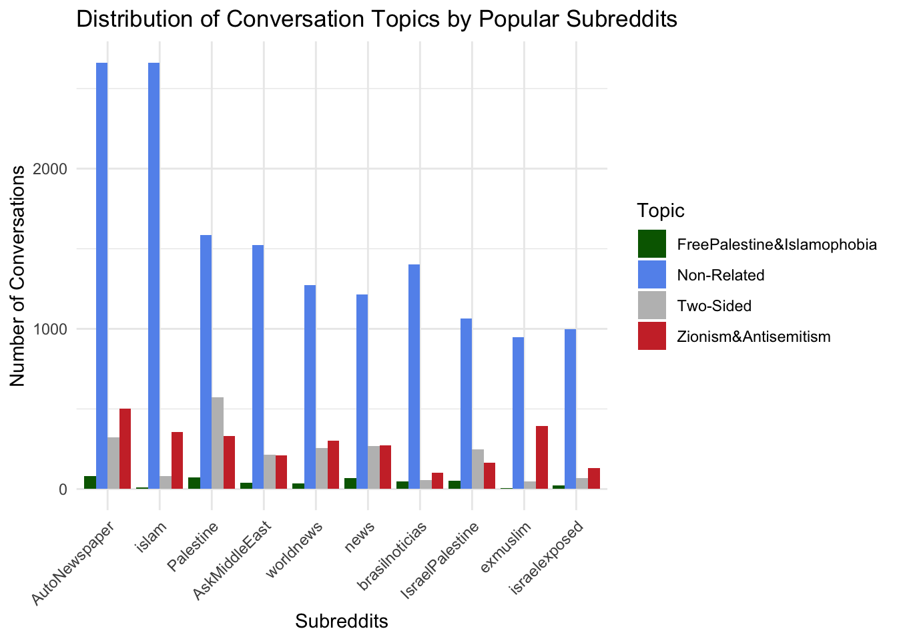

Code
library(tidyverse)
library(readr)
library(lubridate)
library(ggplot2)library(tidyverse)
library(readr)
library(lubridate)
library(ggplot2)submissions <- read_csv("https://edav-final-project.s3.us-east-2.amazonaws.com/submissions.csv")
conversations <- read_csv("https://edav-final-project.s3.us-east-2.amazonaws.com/conversations.csv")
comments <- read_csv("https://edav-final-project.s3.us-east-2.amazonaws.com/comments.csv")This line chart represents the daily volume of submissions over time on Reddit, showcasing the fluctuations in user engagement within the context of discussions about the Israel-Hamas conflict.
submissions <- submissions %>%
mutate(timestamp = as_datetime(timestamp))
submissions_daily <- submissions %>%
mutate(date = as_date(timestamp)) %>%
group_by(date) %>%
summarise(
daily_submissions = n(),
unique_authors = n_distinct(author)
)
ggplot(submissions_daily, aes(x = date, y = daily_submissions)) +
geom_line(color = "blue3", size = 1) +
labs(
title = "Volume of Submissions Over Time",
x = "Date",
y = "Number of Submissions"
) +
theme_minimal() +
theme(
axis.text.x = element_text(angle = 45, hjust = 1)
)From August to early October, submission volumes were relatively stable, fluctuating between 2,000 to 3,000 daily posts. This period likely represents routine discussions and ongoing global interest in Middle Eastern affairs without a significant catalyst driving heightened engagement.
A sharp and sudden increase in submissions is observed starting October 7, 2023, with volumes exceeding 7,500 posts per day.This surge timeline aligns with the Hamas surprise attack on Israel, which marks a significant escalation in the Israel-Hamas conflict. The attack resulted in widespread casualties, kidnappings, and retaliatory airstrikes by Israel, capturing global attention. The elevated submissions reflect heightened discourse, including breaking news updates, debates, emotional responses, and solidarity messages.
After the initial spike, submission volumes remained high, though they showed a gradual decline over the subsequent weeks. This sustained activity corresponds with continued media coverage of the conflict, escalating violence in Gaza, and international diplomatic efforts to mediate the crisis. The smaller fluctuations during this period might represent specific events or developments, such as ceasefire negotiations or notable incidents reported in the news.
Submission volumes began to taper off toward the end of November and into December, stabilizing at around 3,000–4,000 daily posts. This decline could signify reduced immediate interest as the conflict entered a prolonged phase without significant new developments or a shift in media focus to other global issues.
We wanted to explore the dynamics of submissions and unique user activity over time, to provide a deeper understanding of how Reddit users engaged with the Israel-Hamas conflict during the post-conflict, analysis period.
ggplot(submissions_daily) +
geom_line(aes(x = date, y = daily_submissions, color = "Submissions"), size = 1) +
geom_line(aes(x = date, y = unique_authors, color = "Unique Users"), size = 1) +
labs(
title = "Volume of Submissions and Unique Users Over Time",
x = "Date",
y = "Count",
color = "Legend"
) +
scale_color_manual(
values = c("Submissions" = "blue3", "Unique Users" = "cornflowerblue")
) +
theme_minimal() +
theme(
axis.text.x = element_text(angle = 45, hjust = 1)
) Overall, both submissions (dark blue) and unique users (light blue) show a dramatic rise starting October 7, 2023, corresponding to the Hamas surprise attack on Israel. The increase in unique users suggests the event attracted a broader audience, including those who might not typically engage with Israel-Palestine discussions.
Submission activity remained elevated through October, even as unique user counts started to stabilize. This suggests that while overall participation plateaued, a subset of highly engaged users continued driving discussions.
Both metrics begin to decline post-November, reflecting reduced activity as public interest waned, likely due to the normalization of the conflict or shifts in media coverage. The difference in the slopes of the two lines indicates that while fewer unique users contributed to the conversation, those who remained were responsible for a substantial number of posts.
Overall, both submissions (dark blue) and unique users (light blue) show a dramatic rise starting October 7, 2023, corresponding to the Hamas surprise attack on Israel. The increase in unique users suggests the event attracted a broader audience, including those who might not typically engage with Israel-Palestine discussions.
Submission activity remained elevated through October, even as unique user counts started to stabilize. This suggests that while overall participation plateaued, a subset of highly engaged users continued driving discussions.
Both metrics begin to decline post-November, reflecting reduced activity as public interest waned, likely due to the normalization of the conflict or shifts in media coverage. The difference in the slopes of the two lines indicates that while fewer unique users contributed to the conversation, those who remained were responsible for a substantial number of posts.
Next, we examine the ratio of unique users to submissions over time, to investigate whether Reddit activity was driven by a few highly active individuals or a broader user base.
submissions_daily <- submissions_daily %>%
mutate(users_to_submissions_ratio = unique_authors / daily_submissions)
ggplot(submissions_daily, aes(x = date, y = users_to_submissions_ratio)) +
geom_line(color = "blue3", size = 1) +
labs(
title = "Ratio of Unique Users to Submissions Over Time",
x = "Date",
y = "Unique Users / Submissions"
) +
theme_minimal() +
theme(axis.text.x = element_text(angle = 45, hjust = 1))
From August to early October, the ratio remains relatively stable, fluctuating between 0.4 and 0.6. This indicates that on average, there were 2–3 submissions per user, suggesting a balanced engagement among the user base.
On October 7, 2023, the ratio plummets sharply, reaching a low of around 0.3. This sudden drop aligns with the Hamas attack on Israel, suggesting that while the number of submissions surged (as seen in previous graphs), a significant portion of this activity came from a few highly active users repeatedly posting updates, opinions, or reactions.
After the initial spike, the ratio remains below the pre-October baseline, hovering around 0.35–0.4. This indicates that even as submission volumes decreased slightly, the conversation was still dominated by a smaller, highly engaged subset of users, reflecting the ongoing intensity of the conflict discussions.
The ratio starts to recover toward 0.4–0.45 in November and December, suggesting that the broader user base re-engaged, albeit with fewer submissions overall.
Beyond initial user attraction, we wanted to investigate the total upvotes on submissions over time, to visualize the aggregated number of upvotes received by Reddit submissions each day. This will offer us insights into how user engagement trends evolved during the Israel-Hamas conflict.
submissions_daily <- submissions %>%
mutate(date = as_date(timestamp)) %>%
group_by(date) %>%
summarise(daily_upvotes = sum(upvotes, na.rm = TRUE))
ggplot(submissions_daily, aes(x = date, y = daily_upvotes)) +
geom_line(color = "chartreuse3", size = 1) +
labs(
title = "Total Upvotes on Submissions Over Time",
x = "Date",
y = "Number of Upvotes"
) +
theme_minimal() +
theme(axis.text.x = element_text(angle = 45, hjust = 1))From August to early October, daily upvotes remain relatively constant and low, rarely exceeding 100,000 upvotes per day. This period reflects routine activity on Reddit, where submissions attracted a consistent but modest level of engagement.
A significant increase in upvotes begins on October 7, 2023, coinciding with the Hamas attack on Israel. Daily upvotes spike dramatically, surpassing 400,000 upvotes per day, suggesting widespread user interaction with highly upvoted posts. This likely reflects breaking news, updates, solidarity messages, and emotionally charged content resonating with the community.
Upvotes remain elevated throughout October and into November, albeit with some fluctuations. Upvotes remain elevated throughout October and into November, albeit with some fluctuations.
Engagement begins to taper off in December, with daily upvotes declining back to 100,000–200,000 upvotes per day. This mirrors a reduction in submission volumes, as public attention shifted or normalized around the ongoing conflict.
Next, we wanted to investigate if there were variations in the total quantity of daily submissions across selected subreddits. This is represented in the graph below by Israel (red), Palestine (green), and worldnews (blue). This will provide insights into how different communities engaged with the Israel-Hamas conflict.
subreddit_comparison <- submissions %>%
filter(subreddit %in% c("Israel", "Palestine", "worldnews")) %>%
mutate(date = as_date(timestamp)) %>%
group_by(subreddit, date) %>%
summarise(daily_submissions = n(), .groups = "drop")
ggplot(subreddit_comparison, aes(x = date, y = daily_submissions, color = subreddit)) +
geom_line(size = 1) +
labs(
title = "Daily Submissions Across Selected Subreddits",
x = "Date",
y = "Number of Submissions",
color = "Subreddit"
) +
scale_color_manual(
values = c("Israel" = "brown2", "Palestine" = "chartreuse3", "worldnews" = "gray3")
) +
theme_minimal() +
theme(axis.text.x = element_text(angle = 45, hjust = 1))All three subreddits maintain a relatively stable level of activity from August to early October, with worldnews consistently having higher submission volumes compared to the conflict-focused subreddits (Israel and Palestine). This reflects general interest in global events and regional discussions before the conflict escalation.
A sharp surge in activity occurs across all subreddits on October 7, 2023, coinciding with the Hamas attack on Israel. worldnews experiences the highest spike, with over 400 daily submissions, indicating its role as a hub for global news discussions. Both Israel and Palestine subreddits also show significant increases, though on a smaller scale, reflecting their more focused communities.
After the initial surge, worldnews maintains elevated activity levels, albeit with gradual fluctuations, as users continue discussing broader global perspectives and updates. Palestine sees sustained high submission levels, possibly due to continued reports on humanitarian crises and international responses. Israel experiences a sharp decline in daily submissions post-November, likely reflecting a drop in specific discussions or the community’s transition to other forms of engagement.
All subreddits exhibit gradual declines in activity, though worldnews and Palestine retain relatively higher engagement compared to Israel.
We were curious if we could map out the submission volume against key conflict events, and hence we plotted the daily submission volumes on Reddit alongside annotations for significant events in the Israel-Hamas conflict during October–November 2023. We found it extremely interesting that the inclusion of key events highlights the direct correlation between real-world events and online activity.
submissions_daily <- submissions %>%
mutate(date = as_date(timestamp)) %>%
group_by(date) %>%
summarise(
daily_submissions = n()
)
key_events <- data.frame(
date = as.Date(c("2023-10-07", "2023-11-22", "2023-11-30")),
event = c("Hamas Attack", "Temporary Truce", "Truce Extended")
)
ggplot(submissions_daily, aes(x = date, y = daily_submissions)) +
geom_line(color = "blue3", size = 1) +
geom_vline(data = key_events, aes(xintercept = as.numeric(date)), color = "deepskyblue2", linetype = "dashed") +
geom_text(data = key_events, aes(x = date, y = max(submissions_daily$daily_submissions), label = event),
angle = 90, vjust = -0.5, hjust = 1, size = 3, color = "deepskyblue2") +
labs(
title = "Submission Volume with Key Conflict Events",
x = "Date",
y = "Number of Submissions"
) +
theme_minimal() +
theme(axis.text.x = element_text(angle = 45, hjust = 1))The Hamas Attack on Israel led to a sudden and dramatic increase in daily submissions, surpassing 7,500 posts on October 7, 2023. After October 7, submission volumes began to decline but remained elevated through October and early November.
The Temporary Truce on November 22, 2023, marked a brief resurgence in submission volumes, reflecting heightened discussions around the ceasefire, its terms, and its implications for the conflict. The spike suggests that Reddit users were actively tracking and reacting to developments during this period.
Following the Truce Extended event on November 30, submission volumes continued to decrease, returning to pre-October levels by early December. This reflects a normalization of engagement as the immediacy of the crisis faded and public attention shifted.
We wanted to visualise the correlation betwen upvotes and unique users; to visualise the relationship between the number of unique users contributing to submissions and the total upvotes those submissions received each day. The addition of a linear regression line (red dashed line) highlights the overall trend in the data.
submissions_daily <- submissions %>%
mutate(date = as_date(timestamp)) %>%
group_by(date) %>%
summarise(
daily_upvotes = sum(upvotes, na.rm = TRUE),
unique_users = n_distinct(author)
)
ggplot(submissions_daily, aes(x = unique_users, y = daily_upvotes)) +
geom_point(color = "blue3", size = 2) +
geom_smooth(method = "lm", color = "deepskyblue3", linetype = "dashed", size = 1) +
labs(
title = "Correlation Between Upvotes and Unique Users",
x = "Unique Users",
y = "Total Upvotes"
) +
theme_minimal()The upward slope of the regression line indicates a positive correlation between unique user participation and total upvotes. This suggests that as more users engage with submissions, the likelihood of higher upvote counts increases.
A cluster of points with extremely high upvotes (above 200,000) is visible even at relatively moderate levels of unique user participation (1,000–2,000 users). This may indicate that certain highly upvoted submissions (e.g., breaking news or viral content) resonate widely, even with a smaller active user base.
At the far right of the chart, days with the highest unique user counts (above 3,000 users) do not consistently correspond to the highest upvote totals. This suggests that user participation and content validation are not always perfectly aligned.
We also wanted to look at the distribution of comment counts per submission, which will provide insights into the engagement levels and discussion dynamics on Reddit during the Israel-Hamas conflict.
comment_counts <- comments %>%
group_by(submission_id) %>%
summarise(comment_count = n())
submissions_with_comments <- submissions %>%
left_join(comment_counts, by = c("id" = "submission_id")) %>%
mutate(comment_count = ifelse(is.na(comment_count), 0, comment_count))
ggplot(submissions_with_comments, aes(x = comment_count)) +
geom_histogram(binwidth = 1, fill = "darkslateblue", color = "white") +
scale_x_continuous(limits = c(0, 50), breaks = seq(0, 50, by = 5)) +
scale_y_log10() +
labs(
title = "Distribution of Comment Counts per Submission",
x = "Number of Comments",
y = "Frequency (Log Scale)"
) +
theme_minimal()The majority of submissions receive fewer than 5 comments, as evidenced by the sharp drop in frequency for higher comment counts. This indicates that most posts generate limited discussion, reflecting either lower visibility or less engaging content.
A small but significant portion of submissions receives 30 or more comments, suggesting highly engaging or polarizing content that sparks extended discussions. This long tail reflects the disproportionate impact of certain posts in driving conversations.
We used a logarithmic scale on the y-axis to highlight the exponential drop in frequency as comment counts increase. Without this transformation, the disparity between low-comment and high-comment submissions would be less pronounced.
We wanted to find out what were the largest subreddits by number of submissions and comments
Top 20 largest subreddits by number of submissions
subreddit_counts <- submissions %>%
group_by(subreddit) %>%
summarise(frequency = n()) %>%
arrange(desc(frequency)) %>%
slice_head(n = 20)
ggplot(subreddit_counts, aes(x = reorder(subreddit, frequency), y = frequency)) +
geom_bar(stat = "identity", fill = "cornflowerblue", color = "white") +
coord_flip() +
labs(
title = "Top 20 Subreddits by Number of Submissions",
x = "Subreddit",
y = "Frequency"
) +
theme_minimal()AutoNewspaper ranks first, with over 30,000 submissions. This automated subreddit likely reposts news headlines, contributing to its high volume of activity but potentially limited engagement. Subreddits like Palestine, IsraelPalestine, and IsraelHamasWar feature prominently, reflecting their focus on the Israel-Hamas conflict. Their inclusion highlights how niche communities actively discuss the conflict through posts. Broader subreddits like worldnews, AskMiddleEast, and news also rank high, illustrating their role as platforms for regional and global discourse.
Top 20 subreddits by comments
subreddit_comment_counts <- comments %>%
group_by(subreddit) %>%
summarise(frequency = n()) %>%
arrange(desc(frequency)) %>%
slice_head(n = 20)
ggplot(subreddit_comment_counts, aes(x = reorder(subreddit, frequency), y = frequency)) +
geom_bar(stat = "identity", fill = "lightseagreen", color = "white") +
coord_flip() +
labs(
title = "Top 20 Subreddits by Number of Comments",
x = "Subreddit",
y = "Frequency"
) +
theme_minimal()
worldnews dominates with the highest number of comments, exceeding 100,000. This underscores its role as a hub for engaging discussions on global issues, including the conflict. IsraelPalestine ranks second, followed by AskMiddleEast and Palestine, indicating that these communities not only attract submissions but also foster extensive conversations. Subreddits like CombatFootage, PublicFreakout, and Destiny also appear, suggesting that conflict-related content resonates in broader and sometimes unrelated communities.
engagement_data <- comments %>%
group_by(submission_id, controversial) %>%
summarise(
comment_count = n(),
total_upvotes = sum(ups, na.rm = TRUE)
) %>%
left_join(submissions, by = c("submission_id" = "id")) %>%
mutate(controversial = ifelse(controversial == 1, "Controversial", "Non-Controversial"))
ggplot(engagement_data, aes(x = controversial, y = comment_count, fill = controversial)) +
geom_boxplot() +
scale_y_continuous(limits = c(0, quantile(engagement_data$comment_count, 0.95))) +
labs(
title = "Comment Counts by Controversiality",
x = "Controversiality",
y = "Number of Comments"
) +
scale_fill_manual(values = c("Controversial" = "red2", "Non-Controversial" = "aquamarine2")) +
theme_minimal() +
theme(
plot.title = element_text(size = 14, face = "bold"),
axis.title = element_text(size = 12),
legend.position = "none"
)ggplot(engagement_data, aes(x = controversial, y = log1p(comment_count), fill = controversial)) +
geom_boxplot() +
labs(
title = "Comment Counts by Controversiality (Log Scale)",
x = "Controversiality",
y = "Log(Number of Comments + 1)"
) +
scale_fill_manual(values = c("Controversial" = "red2", "Non-Controversial" = "aquamarine2")) +
theme_minimal() +
theme(
plot.title = element_text(size = 14, face = "bold"),
axis.title = element_text(size = 12),
legend.position = "none"
)Non-controversial submissions (aquamarine) exhibit a slightly higher median number of comments compared to controversial ones (red). This suggests that, on average, non-controversial posts may foster more consistent participation across the community.
This suggests that, on average, non-controversial posts may foster more consistent participation across the community. Controversial posts appear to have a tighter distribution, potentially reflecting polarized but limited discussions.
Both categories display outliers with high comment counts, indicating that specific posts—whether controversial or not—can attract exceptional attention.
The log transformation normalizes the scale, emphasizing differences in median and quartile ranges rather than extreme outliers. It highlights the skewed nature of raw comment counts, where a small number of posts dominate engagement. After log transformation, the distributions of comment counts for controversial and non-controversial posts appear more comparable, with only slight variations in medians and upper quartiles.
A conversation is a combined entity of a submission and multiple comments related to it. The creator of the dataset generated every conversation through existing submissions and comments datasets. With added features such as freepalestine_islamophobia and zionism_antisemitism, we can dive deeper into how these factors could affect the magnitude and proportion of other features. We could also understand further how certain subreddits are more skewed and biased towards one topic over the other, and many other analyses that we can conduct.
For better clarity, the topic of each conversation will be labeled as either:
temporal_data <- conversations %>%
mutate(subset = case_when(
freepalestine_islamophobia == 1 & zionism_antisemitism == 0 ~ "FreePalestine&Islamophobia",
freepalestine_islamophobia == 0 & zionism_antisemitism == 1 ~ "Zionism&Antisemitism",
freepalestine_islamophobia == 0 & zionism_antisemitism == 0 ~ "Non-Related",
freepalestine_islamophobia == 1 & zionism_antisemitism == 1 ~ "Two-Sided"
)) %>%
mutate(date = as.Date(datetime)) %>%
group_by(date, subset) %>%
summarise(count = n(), .groups = 'drop')
ggplot(temporal_data, aes(x = date, y = count, color = subset)) +
geom_line(size = 1) +
labs(title = "Volume of Submissions of Conversation Topics",
x = "Date",
y = "Number of Conversations",
color = "Topic") +
scale_color_manual(values = c(
"FreePalestine&Islamophobia" = "chartreuse2",
"Zionism&Antisemitism" = "brown2",
"Non-Related" = "cornflowerblue",
"Two-Sided" = "gray3"
)) +
theme_minimal()
The spike in “Non-Related” conversations during the Israel-Hamas war, instead of related topics like Zionism or Islamophobia, may stem from:
categorized_conversations <- conversations %>%
mutate(subset = case_when(
freepalestine_islamophobia == 1 & zionism_antisemitism == 0 ~ "FreePalestine&Islamophobia",
freepalestine_islamophobia == 0 & zionism_antisemitism == 1 ~ "Zionism&Antisemitism",
freepalestine_islamophobia == 0 & zionism_antisemitism == 0 ~ "Non-Related",
freepalestine_islamophobia == 1 & zionism_antisemitism == 1 ~ "Two-Sided"
))
ggplot(categorized_conversations, aes(x = subset, y = log(upvotes), fill = subset)) +
geom_violin(trim = FALSE, alpha = 0.7) +
geom_boxplot(width = 0.2, outlier.shape = NA, alpha = 0.5) +
labs(
title = "Distribution of Popularity by Conversation Topic",
x = "Conversation Topic",
y = "Log(Upvotes)",
fill = "Topic"
) +
scale_fill_manual(values = c(
"FreePalestine&Islamophobia" = "chartreuse2",
"Zionism&Antisemitism" = "brown2",
"Non-Related" = "darkslategray4",
"Two-Sided" = "gray3"
)) +
theme_minimal() +
theme(
axis.text.x = element_text(angle = 45, hjust = 1),
legend.position = "none" # Remove legend if redundant
)The violin plot shows the distribution of log-transformed upvotes for each conversation topic. Based on the visualization:
This lack of distinction might suggest that upvotes are influenced more by other factors (e.g., subreddit size or user engagement patterns) than the specific conversation topic.
subsets <- conversations %>%
filter(subreddit %in% subreddit_counts$subreddit[1:10]) %>%
mutate(subset = case_when(
freepalestine_islamophobia == 1 & zionism_antisemitism == 0 ~ "FreePalestine&Islamophobia",
freepalestine_islamophobia == 0 & zionism_antisemitism == 1 ~ "Zionism&Antisemitism",
freepalestine_islamophobia == 0 & zionism_antisemitism == 0 ~ "Non-Related",
freepalestine_islamophobia == 1 & zionism_antisemitism == 1 ~ "Two-Sided"
)) %>%
group_by(subreddit, subset) %>%
summarise(count = n(), .groups = 'drop') %>%
mutate(subreddit = reorder(subreddit, -count, sum))
ggplot(subsets, aes(x = subreddit, y = count, fill = subset)) +
geom_bar(stat = "identity", position = "dodge") +
labs(title = "Distribution of Conversation Topics by Popular Subreddits",
x = "Subreddits",
y = "Number of Conversations",
fill = "Topic") +
scale_fill_manual(values = c(
"FreePalestine&Islamophobia" = "darkgreen",
"Zionism&Antisemitism" = "brown3",
"Non-Related" = "cornflowerblue",
"Two-Sided" = "gray"
)) +
theme_minimal() +
theme(axis.text.x = element_text(angle = 45, hjust = 1))
subsets <- conversations %>%
filter(subreddit %in% subreddit_counts$subreddit[1:10]) %>%
filter(freepalestine_islamophobia != 0 | zionism_antisemitism != 0) %>%
mutate(subset = case_when(
freepalestine_islamophobia == 1 & zionism_antisemitism == 0 ~ "FreePalestine&Islamophobia",
freepalestine_islamophobia == 0 & zionism_antisemitism == 1 ~ "Zionism&Antisemitism",
freepalestine_islamophobia == 1 & zionism_antisemitism == 1 ~ "Two-Sided"
)) %>%
group_by(subreddit, subset) %>%
summarise(count = n(), .groups = 'drop') %>%
mutate(subreddit = reorder(subreddit, -count, sum))
ggplot(subsets, aes(x = subreddit, y = count, fill = subset)) +
geom_bar(stat = "identity", position = "dodge") +
labs(title = "Distribution of Conversation Topics by Popular Subreddits",
x = "Subreddits",
y = "Number of Conversations",
fill = "Topic") +
scale_fill_manual(values = c(
"FreePalestine&Islamophobia" = "darkgreen",
"Zionism&Antisemitism" = "brown3",
"Two-Sided" = "gray"
)) +
theme_minimal() +
theme(axis.text.x = element_text(angle = 45, hjust = 1))The first visualization includes “Non-Related” topics, showing that general discussions still dominate most subreddits, overshadowing the related categories. This broader perspective provides context on overall engagement but dilutes the focus on politically relevant conversations.
The second visualization focuses on conflict-related topics (FreePalestine&Islamophobia, Two-Sided, Zionism&Antisemitism), highlighting their distribution across subreddits. It offers a more focused view relevant to the political climate, emphasizing the volume of conversations directly tied to the conflict.
joined_data <- comments %>%
inner_join(conversations, by = c("submission_id" = "id")) %>%
mutate(
subset = case_when(
freepalestine_islamophobia == 1 & zionism_antisemitism == 0 ~ "FreePalestine&Islamophobia",
freepalestine_islamophobia == 0 & zionism_antisemitism == 1 ~ "Zionism&Antisemitism",
freepalestine_islamophobia == 0 & zionism_antisemitism == 0 ~ "Non-Related",
freepalestine_islamophobia == 1 & zionism_antisemitism == 1 ~ "Two-Sided"
)
)
mosaic_data <- joined_data %>%
group_by(subset, controversial) %>%
summarise(count = n(), .groups = 'drop')
ggplot(mosaic_data, aes(x = subset, y = as.factor(controversial), fill = count)) +
geom_tile(color = "white") +
labs(
title = "Mosaic Plot of Conversation Topics vs. Controversial Comments",
x = "Conversation Topic",
y = "Controversial (0 = No, 1 = Yes)",
fill = "Count"
) +
scale_fill_gradient(low = "azure2", high = "blue3") +
theme_minimal() +
theme(
axis.text.x = element_text(angle = 45, hjust = 1)
)The mosaic plot shows that “Non-Related” topics dominate conversations, with most comments being non-controversial. Controversial comments are sparse across all topics, and related topics like “Zionism&Antisemitism” and “Two-Sided” have significantly fewer conversations overall. “Controversial” comments are sparse across all conversation topics, suggesting limited polarizing discussions.